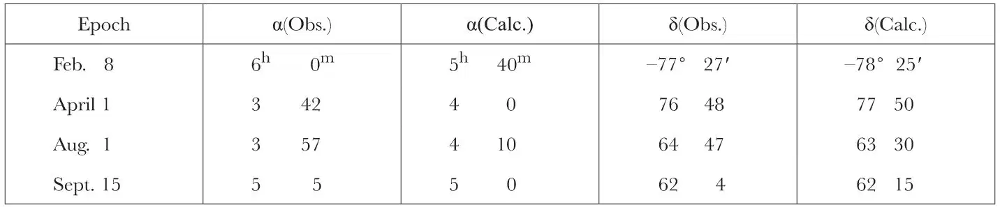
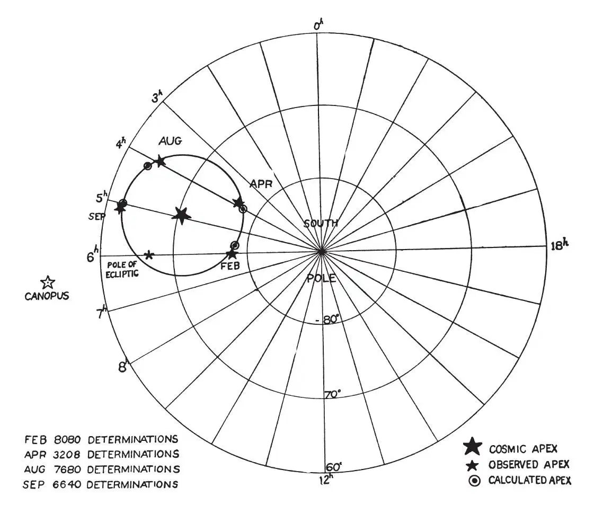
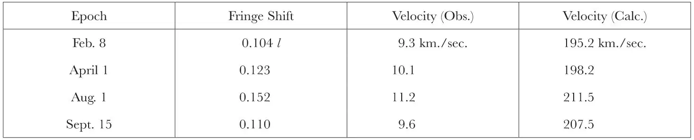

中文
中文D. C. Miller
Editor’s Note
The ether-drift experiment was that in which Michelson and Morley in 1892, using an optical interferometer they had constructed in Ohio in the United States, demonstrated that the supposed ether filling all of space did not exist. This paper uses similar equipment to work out what is called the “absolute” movement of the Solar System through space. The use of the term “absolute” pays scant attention to the theory of relativity, but the result does suggest how the Solar System is moving with respect to the surrounding galaxies. 中文
THE ether-drift experiment first suggested by Maxwell in 1878 and made possible by Michelson’s invention of the interferometer in 1881, though suitable for the detection of the general absolute motion of the Earth, was actually applied for detecting only the known orbital component of the Earth’s motion. For the first time, in 1925 and 1926, I made observations at Mount Wilson of such extent and completeness that they were sufficient for the determination of the absolute motion of the Earth. These observations involved the making of about 200,000 single readings of the position of the interference fringes. 中文
The ether-drift observable in the interferometer, as is well known, is a second order effect; and the observations correctly define the line in which the absolute motion takes place, but they do not determine whether the motion in this line is positive or negative in direction. 中文
At the Kansas City meeting of the American Association for the Advancement of Science, in December, 1925, before the completion of the Mount Wilson observations, a report was made showing that the experiment gives evidence of a cosmic motion of the solar system, directed towards a northern apex; but the effects of the orbital motion were not found, though it seemed that the observations should have been quite sufficient for this purpose1. 中文
The studies of the proper motions and of the motions in the line of sight of the stars in our galaxy have shown that the solar system is moving, with respect to our own cluster, in the general direction of a northern apex in the constellation Hercules. This apex is near that indicated by the ether-drift observations as just reported, and seemed to be confirmatory evidence of its correctness. Probably it was this that caused the continuation of the analysis of the problem, on the supposition that the absolute motion was to the northward in the indicated line. All possible combinations and adjustments failed to reconcile the computed effects of combined orbital and cosmic motions with the observed facts. 中文
In the autumn of 1932, a re-analysis of the problem was made, based upon the alternative possibility that the motion of the solar system is in the cosmic line previously determined, but is in the opposite direction, being directed southward. This gives wholly consistent results, leading for the first time to a definite quantitative determination of the absolute motion of the solar system, and also to a positive detection of the effect of the motion of the Earth in its orbit. 中文
The absolute motion of the Earth may be presumed to be the resultant of two independent component motions. One of these is the orbital motion around the Sun, which is known both as to magnitude and direction. For the purposes of this study, the velocity of the orbital motion is taken as 30 kilometres per second, and the direction changes continuously through the year, at all times being tangential to the orbit. The second component is the cosmical motion of the Sun and the solar system. Presumably this is constant in both direction and magnitude, but neither the direction nor magnitude is known; the determination of these quantities is the particular object of this experiment. The rotation of the Earth on its axis produces a velocity of less than four tenths of a kilometre per second in the latitude of observation and is negligible so far as the velocity of absolute motion is concerned; but this rotation has an important effect upon the apparent direction of the motion and is an essential factor in the solution of the problem. Since the orbital component is continually changing in direction, the general solution is difficult; but by observing the resultant motion when the Earth is in different parts of its orbit, a solution by trial is practicable. For this purpose it is necessary to determine the variations in the magnitude and in the direction of the ether-drift effect throughout a period of twenty-four hours and at three or more epochs of the year. The observations made at Mount Wilson correspond to the epochs April 1, August 1 and September 15, 1925, and February 8, 1926. 中文
The point on the celestial sphere towards which the Earth is moving because of its absolute motion is called the apex of its motion. This point is defined by its right ascension and declination, as is a star, and the formulae of practical astronomy are directly applicable to its determination from the interferometer observations. The theoretical consideration of the determination of the apex of the motion of the Earth has been given in a paper by Prof. J. J. Nassau and Prof. P. M. Morse2. 中文
Table I gives the right ascensions and declinations of the apexes of the Earth’s cosmical motion as obtained from the interferometer observations for the four epochs on the presumption of a southward motion, together with the right ascensions and declinations calculated upon the theory of an ether-drift. 中文
Table I. Location of resultant apexes

Apex of cosmic component α= 4h 56m, δ= –70° 33′
From these resultant apexes are determined four values for the apex of the cosmic component, which is the apex of the motion of the solar system as a whole. This apex has the right ascension 4h 56m and the declination 70° 33′ south. 中文
Continuing the astronomical description, having found the elements of the “aberration orbit”, these are used to compute the apparent places of the resultant apexes for the four epochs of observation. On the accompanying chart of the south circumpolar region of the celestial sphere (Fig. 1), the large star indicates the apex of the cosmic motion, and the four circles show the locations of the calculated apexes. These apexes necessarily lie on the closed curve representing the calculated aberration orbit, the centre of which is the apex of the cosmic component of the Earth’s motion. This aberration orbit is the projection of the Earth’s orbit on the celestial sphere, which in this case is approximately a circle. The observed apexes for the four epochs are represented by the small stars. The locations of the pole of the ecliptic and of the star Canopus are also shown. The close agreement between the calculated and observed apparent apexes would seem to be conclusive evidence of the validity of the solution of the ether-drift observations for the absolute motion of the Earth and also for the effect of the orbital motion of the Earth, which hitherto has not been demonstrated. 中文

Fig. 1. Observed and calculated apexes of the absolute motion of the solar system. 中文
It may seem surprising that such close agreement between observed and calculated places can be obtained from observations of such minute effects, and effects which are reputed to be of such difficulty and uncertainty. Perhaps an explanation is the fact that the star representing the final result for the February epoch is, in effect, the average of 8,080 single determinations of its location; the star for the August epoch represents 7,680 single determinations, that for September, 6,640, and that for April, 3,208 determinations. 中文
The location of the apex of the solar motion is in the southern constellation Dorado, the Sword-Fish, and is about 20° south of the star Canopus, the second brightest star in the heavens. It is in the midst of the famous Great Magellanic Cloud of stars. The apex is about 7° from the pole of the ecliptic and only 6° from the pole of the invariable plane of the solar system; thus the indicated motion of the solar system is almost perpendicular to the invariable plane. This suggests that the solar system might be thought of as a dynamic disc which is being pulled through a resisting medium and therefore sets itself perpendicular to the line of motion. 中文
It is presumed that the Earth’s motion in space is projected on to the plane of the interferometer, and the direction of this motion is determined by observing the variations produced in the projected component by the rotation of the Earth on its axis and by the revolution around the Sun. Both the magnitude and the direction of the observed effect vary in the manner and in the proportion required by an ether-drift, on the assumption of a stagnant ether which is undisturbed by the motion of the Earth through it. But the observed magnitude of the effect has always been less than was to be expected, indicating a reduced velocity of relative motion, as though the ether through which the interferometer is being carried by the Earth’s motion were not absolutely at rest. The orbital velocity of the Earth being known, 30 kilometres per second, the cosmical velocity of the solar system, determined from the proportional variations in the observed effects, is found to be 208 kilometres per second. 中文
Table II gives the observed periodic displacement of the fringe system as the interferometer rotates on its axis, and the corresponding velocity of relative motion of the Earth and ether. 中文
Table II. Displacements and velocities

The last column gives the velocity to be expected in the stagnant ether theory on the presumption that the cosmic component and the orbital component are both reduced in the same proportion in the interferometer. The mean factor of reduction is k = 0.0514. The azimuth of the observed effect is subject to a diurnal variation, produced by the rotation of the Earth on its axis. The observed oscillations of the azimuth are in accordance with theory as to magnitude and time of occurrence, but for some unexplained reason, the axis of the oscillations is displaced from the meridian. In order to account for the results here presented, it seems necessary to accept the reality of a modified Lorentz–FitzGerald contraction, or to postulate a viscous or dragged ether as proposed by Stokes. 中文
The results here reported are, notwithstanding a common belief to the contrary, fully in accordance with the original observations of Michelson and Morley of 1887, and with those of Morley and Miller of 1904–5. The history of the ether-drift experiment and a description of the method of using the interferometer, together with a full account of the observations and their reduction, has been published elsewhere3. 中文
(133, 162-164; 1934)
Dayton C. Miller: Case School of Applied Science, Cleveland, Ohio.
References:
1. Science, 63, 433; 1926. Nature, 116, 49; 1925.
2. Astrophys. J., March, 1927.
3. Rev. Mod. Phys., 5, 203, July, 1933.
* Paper read before Section A (Mathematical and Physical Sciences) of the British Association meeting at Leicester on September 13, 1933.